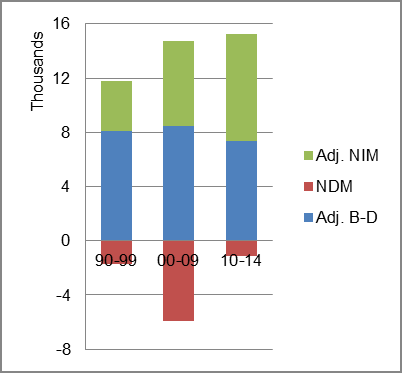

The foreign-born (FB) population increased from 56,278 in 1960 to 139,477 in 2010. That was an increase of 147.8 percent. The foreign-born share changed from 2.0 percent to 4.6 percent.
The share of the overall population that was native-born (NB) increased by 7.6 percent.
Iowa: Population 1960-2010
The first chart below shows the three population change factors for three periods adjusted for annual average amounts. Natural change (B-D) was the primary factor in population increase in all three periods while NDM was a consistent negative factor.
The second chart shows the same data but with an adjustment to reflect births to immigrants shifted to NIM. In it, B-D continued to be the principal source of added population.
Iowa: Sources of Population Change 1990-2013 Iowa: Sources of Population Change (Adjusted) 1990-2013 
B-D NDM NIM B-D NDM NIM 90-'99 81.4% neg. 18.6% 90-'99 70.2% neg. 29.8% 00-'09 74.5% neg. 25.5% 00-'09 65.9% neg. 34.1% 10-'13 72.2% neg. 27.8% 10-'13 55.3% neg. 44.7%